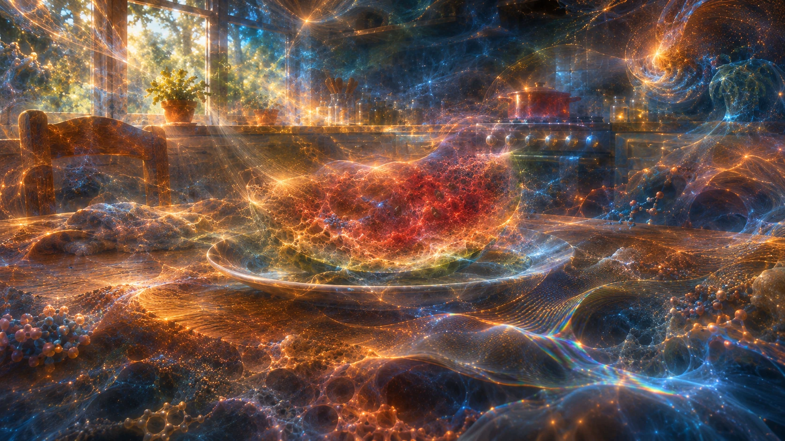
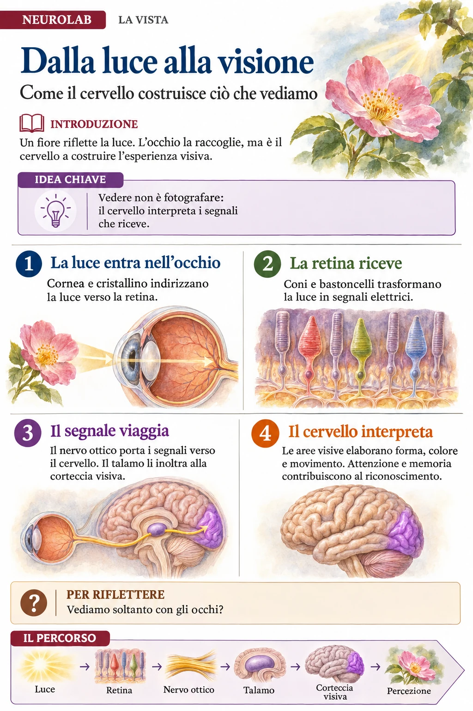
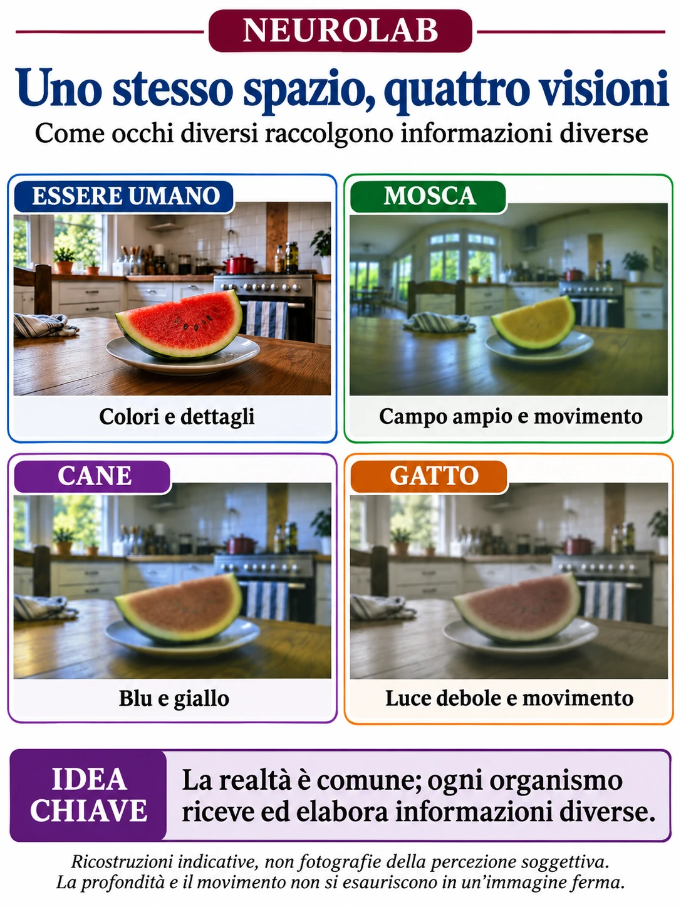

La luce entra nell’occhio
La luce riflessa dagli oggetti attraversa cornea, pupilla e cristallino. Queste strutture contribuiscono a mettere a fuoco l’immagine sulla retina, nella parte posteriore dell’occhio.
La luce arriva ai nostri occhi. Ma cosa accade prima che diventi l’immagine di un fiore, di una cucina o di un volto?
Inizia il percorso ↓
UNA REALTÀ · MOLTI SGUARDIUn fiore riflette la luce. L’occhio la raccoglie e la retina la trasforma in segnali. Il cervello li elabora: così prende forma la nostra esperienza visiva.
La luce riflessa dagli oggetti attraversa cornea, pupilla e cristallino. Queste strutture contribuiscono a mettere a fuoco l’immagine sulla retina, nella parte posteriore dell’occhio.
Coni e bastoncelli sono fotorecettori: rispondono alla luce e la trasformano in segnali elettrici. I coni contribuiscono alla visione dei colori e dei dettagli; i bastoncelli sono particolarmente utili quando la luce è debole.
Le cellule gangliari della retina inviano impulsi lungo il nervo ottico. Dopo un incrocio parziale al chiasma, le vie ottiche raggiungono il corpo genicolato laterale del talamo, che inoltra l’informazione alla corteccia visiva.
La corteccia visiva primaria si trova nel lobo occipitale. Insieme ad altre aree contribuisce all’analisi di contorni, colori, movimento e profondità. Attenzione, memoria e contesto partecipano al riconoscimento.

Luce → Retina → Nervo ottico → Talamo → Corteccia visiva → Percezione
La stessa cucina può essere osservata da organismi con occhi e sistemi nervosi diversi. Ognuno raccoglie alcune informazioni dell’ambiente e le elabora secondo le proprie caratteristiche.

La maggior parte degli esseri umani ha tre tipi di coni, sensibili a intervalli diversi di lunghezze d’onda. In buone condizioni di luce distinguiamo molti colori e dettagli fini.
Gli occhi composti raccolgono informazioni da molte direzioni. Le capacità variano fra specie; in diverse mosche alcuni recettori rispondono anche all’ultravioletto. La visuale non è una griglia di esagoni sovrapposta agli oggetti.
Studi comportamentali indicano una visione cromatica dicromatica: alcune differenze tra rosso e verde per noi evidenti sono meno distinguibili. Campo visivo e prestazioni variano anche tra individui e razze.
Le ricerche indicano una base per la visione dicromatica. I gatti sono adattati alla visione in luce debole; questo non significa che vedano nel buio totale. L’immagine è una suggestione, non una misura dei colori o della nitidezza.
Movimento, profondità e adattamento alla luce si sviluppano nel tempo: una singola immagine non può mostrarli completamente. Le ricostruzioni non dimostrano come un animale «provi» soggettivamente la visione.
Proviamo a immaginare la stessa cucina senza partire dai colori e dalle forme con cui la percepiamo. È un esperimento di immaginazione: appena la rappresentiamo, adottiamo già un punto di vista.
La scienza descrive materia, radiazione e interazioni attraverso osservazioni, misure e modelli. Questi strumenti permettono di controllare e discutere pubblicamente le nostre spiegazioni.
Le superfici riflettono la luce in modi diversi. Il colore che sperimentiamo dipende anche dalla luce presente e dal modo in cui il sistema visivo risponde ed elabora i segnali.
«Il mondo non coincide semplicemente con l’immagine che ne abbiamo.»
La questione del rapporto tra realtà indipendente, conoscenza ed esperienza resta aperta alla discussione filosofica: l’immagine propone una domanda, non una risposta definitiva.
Le illustrazioni delle visioni animali e l’immagine della realtà oltre lo sguardo sono proposte didattiche, non misure fisiologiche.